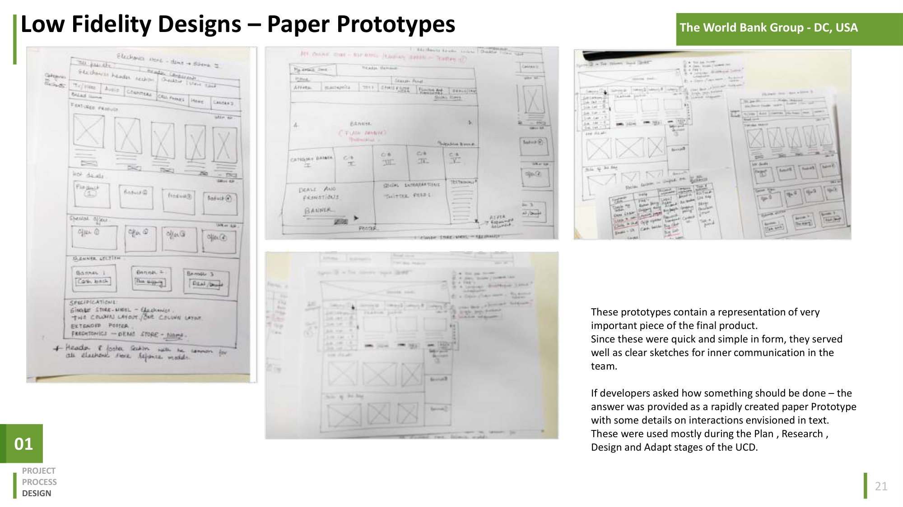
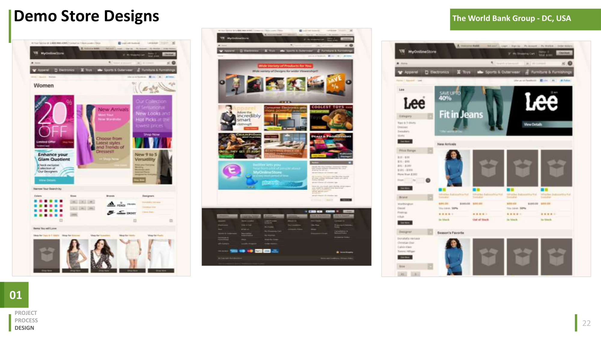
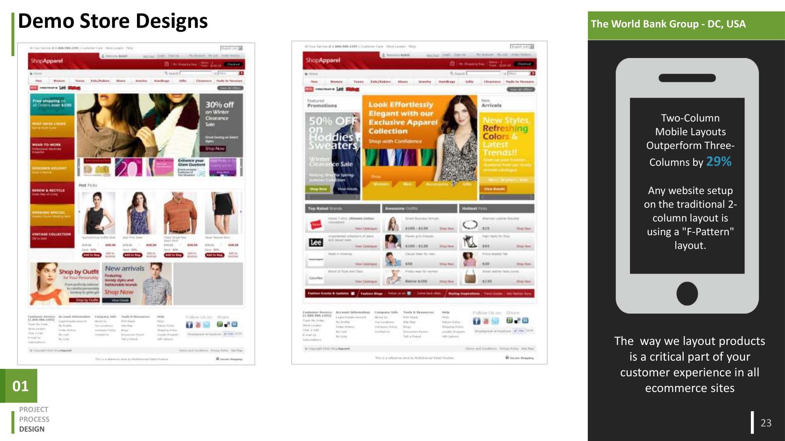
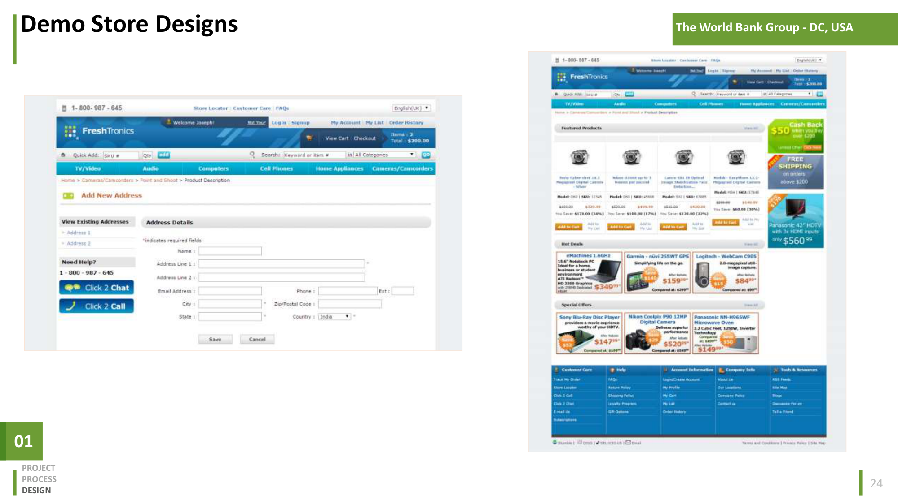

Retail Demo Store A reference store experience across five retail verticals.
A reference store experience across five retail verticals.
- Ecommerce
- TCS
A reference store experience across five retail verticals.
Design and Development of an end-to-end consumer-centric eCommerce platform that helps retailers, brands, and cataloguers with the consumer value cycle of Attract-Convert-Engage-Assist-and-Grow. The platform was built on the open-source framework OFBIZ.
Vision: The TCS Digital Commerce Solution for Retail is an integrated, modular, eCommerce solution designed to help Retailers manage the digital commerce cycle—Market, Sell, Service—to deliver superior customer experiences and reduce operational costs.
Discussion and formal interviews with stakeholders and technologists served as the critical first step. The User-Centric Design (UCD) process was the main methodology followed during product envisioning and development. Post the launch of the Vanilla-flavored product, feature and functionality development for each market release adopted LEAN UX principles.
The continuous process loop involved: Plan → Research → Adapt → Design → Measure. This iterative cycle included internal validation, external testing, prototyping, and wireframing to discover the big problems that the product could fix.
Designing a product with a great user experience is about making the users feel like it has been designed just for them. Key audiences were established through demographics and purchasing habits (New Visitors, Top Purchasers, Abandoned Consumers).
Each user journey was broken down into key goals, driving user stories that shaped the product's features. We focused on delivering a bundled offering for Core e-Commerce business functions leveraging the 5 C's and 4 P's (Customer, Catalogue, Content, Commerce, Customer Service | Product, Price, Promotion, Personalization).
Features were prioritized based on user research, competitive benchmarking, and account mining. Key highlights included Advanced Search (used by 50% of retailers), Personalization (desired by 80% of customers), Reviews & Ratings, Social Integrations, Dynamic Imaging, and Single-Page Checkout (yielding up to 50% higher conversion rates).
To address varied customer requirements efficiently, standards-based, CSS-driven customizable templates (Two-Column and Three-Column) were developed. These templates offered a flexible UI model that could be rolled out as-is or adapted to specific branding needs.
Rapid paper prototypes were instrumental for internal communication, clarifying interaction details during the Plan, Research, Design, and Adapt stages.

The final designs leveraged the template system to create tailored consumer experiences with responsive layouts (notably prioritizing two-column mobile layouts to out-perform traditional F-patterns).


